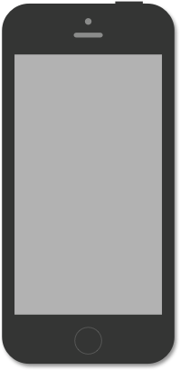

Introducing

Because your UI should sound as good as it looks.

Some sites charge a dollar or more for just one sound. SoundKit give you 300 high quality sounds for just $18. That’s less than six cents per sound. We think this sounds like a pretty good thing.

All of our sounds are meticulously titled and organized into folders by type so you can find the perfect sound in no time.
All sounds are output as high quality .AIFF files in 44.1khz /16 bit audio, giving you CD quality sound without bloated file sizes. Hooray!
Sounds delivered as one .zip file.
After purchase, you’ll recieve a download link.
SoundKit was imagined and created in Atlanta, Georiga at Dunk Tank. Dunk Tank is a creative design studio disciplined in everything from sound design to animation and creative strategy. All sounds we’re recorded, designed, and mixed in the Dunk Tank studios.
After mixing, all sounds were professionally mastered for consistency and quality at Jump The Shark Studios by sound engineer Jay Wallace.
Each file has been broken up into a category for ease of use. We encourage you to experiement with sounds in new and unique ways. Our categories are just guides to get you started.
We hope you enjoy using SoundKit as much as we enjoyed creating it. Please share with us how you use the sounds. We always welcome feedback and questions at beepboop@soundkit.io.